Avaliação · 3 minutos
Há 4 padrões que fazem pessoas competentes perderem espaço junto da chefia. Em 3 minutos ficas a conhecer o teu, e o que está por trás dele.
20 perguntas, sem respostas certas ou erradas.
Avaliação concluída
Só preciso de saber quem és, para o preparar à tua medida.
A analisar as tuas respostas...
O teu resultado
Escolheste frases como estas
O que isto te pode estar a custar
O problema não és tu, nem é o teu chefe. É que falam linguagens diferentes, e a dele pode aprender-se.
O que está por trás disto
Cada pessoa ouve, decide e reage segundo um perfil comportamental. Quando falas com o teu chefe na linguagem do perfil errado, a tua mensagem perde-se pelo caminho, por mais competente que sejas e por mais razão que tenhas.
Em qual destes quatro está o teu chefe? Consegues dizer com certeza?
Três perguntas para ti
Não precisas de responder. Repara só no que sentiste.
O teu próximo passo
Disseste que, daqui a um ano, o que mais te pesaria era
E que, com o teu chefe, o que mais gostavas de conseguir era
No curso
Avaliação criada por Mafalda Almeida, Liderança & Poder Pessoal.
Quando sentires que é o momento: curso , em
